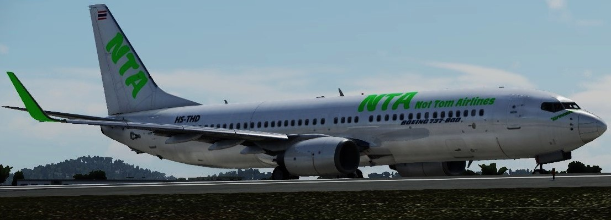
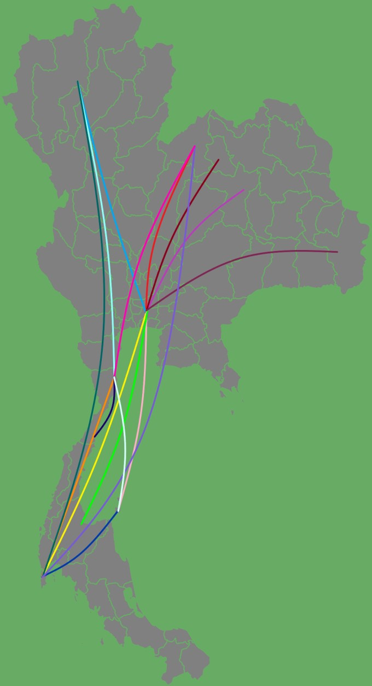
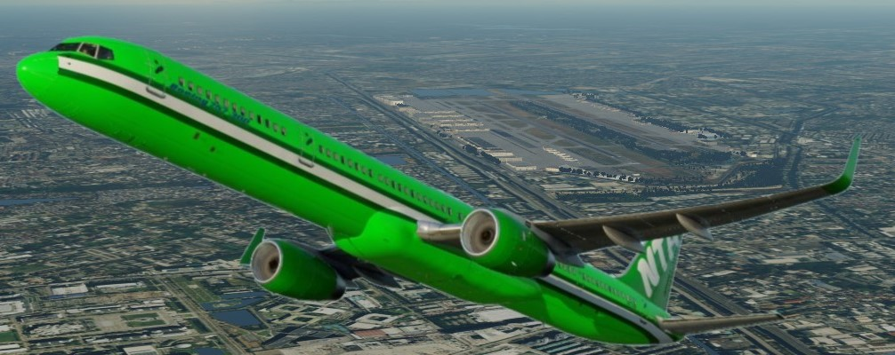

Welcome to the official Not Tom Airlines (NTA) website!
Here you can find:
our flights
our aircraft
aircraft photos

Our Domestic Flights (Thailand)
These flights listed below with their flight numbers operate within Thailand and typically with short/medium haul airliners. A map with is provided below the list:
VTBD/VTUL | Bangkok/Loei
NTA2526 | VTBD - VTUL
NTA2527 | VTUL - VTBD
VTBD/VTSP | Bangkok/Phuket
NTA1674 | VTBD - VTSP
NTA1677 | VTSP - VTBD
VTBD/VTCC | Bangkok/Chiang Mai
NTA1644 | VTBD - VTCC
NTA1645 | VTCC - VTBD
VTCC/VTPH | Chiang Mai/Hua Hin
NTA1646 | VTCC - VTPH
NTA1647 | VTPH - VTCC
VTBD/VTUK | Bangkok/Kon Kean
NTA2627 | VTBD - VTUK
NTA2628 | VTUK - VTBD
VTBD/VTUD | Bangkok/Udon Thani
NTA2728 | VTBD - VTUD
NTA2729 | VTUD - VTBD
VTBD/VTSM | Bangkok/Samui
NTA9701 | VTBD - VTSM
NTA9702 | VTSM - VTBD
VTSP/VTSM | Phuket/Samui
NTA9703 | VTSM - VTSP
NTA9704 | VTSP - VTSM
VTBD/VTSB | Bangkok/Surat Thani
NTA2121 | VTBD - VTSB
NTA2122 | VTSB - VTBD
VTBD/VTUU | Bangkok/Ubon Ratchatani
NTA2730 | VTBD - VTUU
NTA2731 | VTUU - VTBD
VTPH/VTSP | Hua Hin/Phuket
NTA1648 | VTPH - VTSP
NTA1649 | VTSP - VTPH
VTSP/VTCC | Phuket - Chiang Mai
NTA2000 | VTSP - VTCC
NTA2001 | VTCC - VTSP
VTSP/VTUL | Phuket/Loei
NTA2002 | VTSP - VTUL
NTA2003 | VTUL - VTSP
VTPH/VTSE | Hua Hin/Chumphon
NTA3000 | VTPH - VTSE
NTA3001 | VTSE - VTPH
VTPH/VTUL | Hua Hin/Loei
NTA3002 | VTPH - VTUL
NTA3003 | VTUL - VTPH
VTPH/VTSM | Hua Hin/Samui
NTA3004 | VTPH - VTSM
NTA3005 | VTSM - VTPH

What's to be added?
As you may have noticed, we are missing a few things such as our international routes; our fleet; aircraft photos; livery download links. Those items will be added in the near future, so don't worry!
